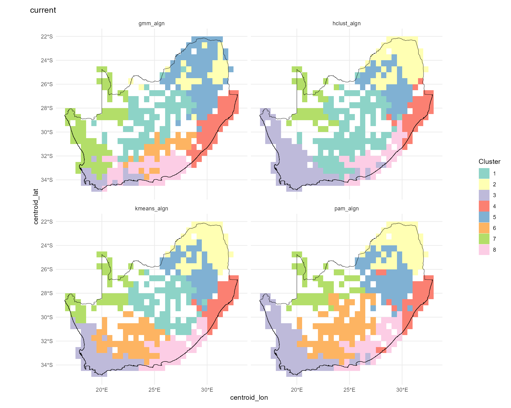
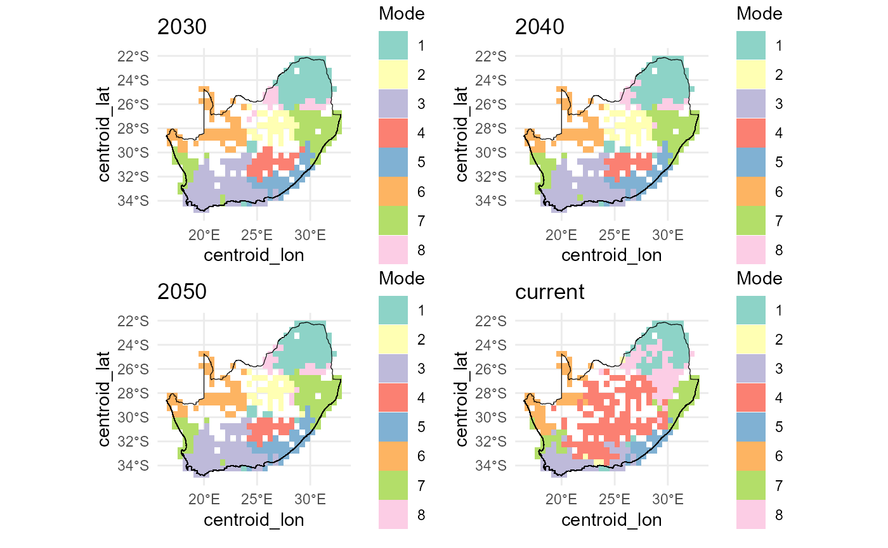
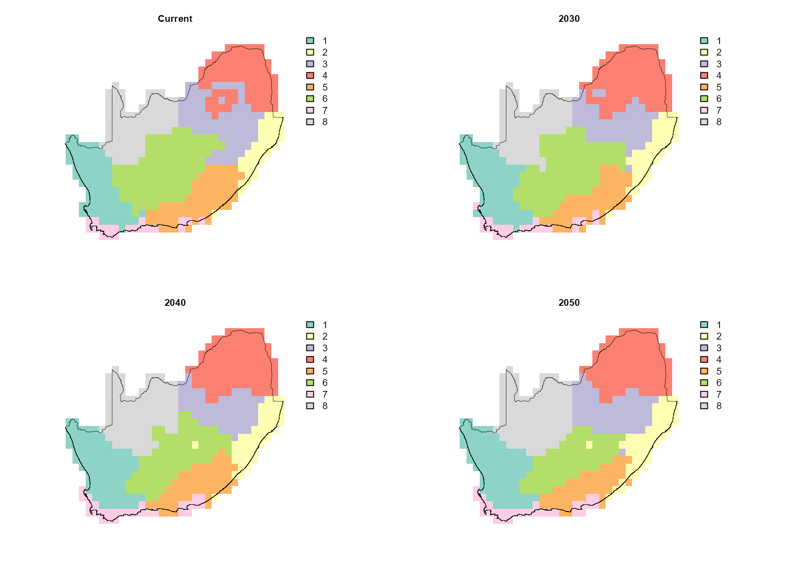

dissmapr
A Novel Framework for Automated Compositional Dissimilarity and Biodiversity Turnover Analysis
1. Run clustering analyses using map_bioreg() to map
bioregions
In this step we translate our site‐level ζ₂ predictions into spatial
bioregions. Calling map_bioreg() on the predictors_df does
the following:
- z-scales the predicted turnover, longitude and latitude;
- fits four clustering algorithms (k-means, PAM, hierarchical and GMM);
- k-means partitions points around centroids and is fast for large data sets.
- PAM (Partitioning Around Medoids) is a medoid-based analogue of k-means that is more robust to outliers.
- Hierarchical agglomerative clustering builds a dendrogram and then “cuts” it at the chosen k, capturing nested structure in the data.
- GMM (Gaussian Mixture Model) treats clusters as multivariate normal distributions and assigns each point by maximum likelihood.
- realigns each method’s labels to the k-means solution for consistency;
- builds both nearest-neighbour and thin-plate-spline interpolated surfaces;
- returns the raw cluster assignments and gridded rasters, and—because
show_plot=TRUE—draws a 2×2 panel of maps.
The result is a set of complementary bioregion maps and rasters you can use to compare how different algorithms partition the landscape based on compositional turnover and geography.
# Add this to {, fig.width=11.25, fig.height=9, warning=FALSE, message=FALSE}
# Run `map_bioreg` function to generate and plot clusters
bioreg_current = dissmapr::map_bioreg(
data = predictors_df,
scale_cols = c("pred_zetaExp", "centroid_lon", "centroid_lat"),
method = 'all', # Options: c("kmeans","pam","hclust","gmm","all"),
k_override = 8,
interpolate = 'nn', # Options: c("none","nn","tps","all"),
x_col ='centroid_lon',
y_col ='centroid_lat',
res = 0.5,
crs = "EPSG:4326",
plot = TRUE,
bndy_fc = rsa)
# Check results
str(bioreg_current, max.level=1)
#> List of 6
#> $ none :List of 1
#> $ nn :List of 1
#> $ tps : NULL
#> $ table :'data.frame': 415 obs. of 24 variables:
#> $ plots :List of 1
#> $ methods: chr [1:4] "kmeans" "pam" "hclust" "gmm"2. Map future bioregions using map_bioreg()
Below we expand our workflow to map the forecasted ζ₂ bioregions
under three extreme climate futures (2030, 2040, 2050) alongside the
current scenario. To see how the bioregional partitions shift, we split
all_preds by scenario and apply map_bioreg()
(k-means + hierarchical, both NN and TPS interpolation). We then extract
the hierarchical cluster layers, mask them to our study area, and plot
all four maps in a 2×2 layout:
# Split your combined predictions by scenario into a named list
by_scn = split(all_preds, all_preds$scenario)
# For each scenario, call map_bioreg() with all algorithms
bioreg_future = dissmapr::map_bioreg(
data = by_scn,
scale_cols = c("pred_zetaExp", "centroid_lon", "centroid_lat"),
method = 'all', # Options: c("kmeans","pam","hclust","gmm","all"),
k_override = 8,
interpolate = 'nn', # Options: c("none","nn","tps","all"),
x_col ='centroid_lon',
y_col ='centroid_lat',
res = 0.5,
crs = "EPSG:4326",
plot = TRUE,
bndy_fc = rsa)
# Check results
str(bioreg_future, max.level=1)
#> List of 6
#> $ none :List of 4
#> $ nn :List of 4
#> $ tps : NULL
#> $ table :'data.frame': 1660 obs. of 24 variables:
#> $ plots :List of 4
#> $ methods: chr [1:4] "kmeans" "pam" "hclust" "gmm"Below we visualise the nearest-neighbour interpolated future‐scenario
cluster outputs. First, we list the structure of the
bioreg_future result to confirm available components. We
then combine the k-means nearest-neighbour rasters for “current” and
each future year into a single SpatRaster stack
(future_nn), and resample, then mask it to the RSA boundary
(mask_future_nn). Finally, we lay out a 2×2 plot grid,
compute a discrete colour palette for each layer based on its unique
classes, and render each masked layer with its boundary overlay for a
quick inspection of bioregion changes across time.
# Check results
str(bioreg_future, max.level=1)
#> List of 6
#> $ none :List of 4
#> $ nn :List of 4
#> $ tps : NULL
#> $ table :'data.frame': 1660 obs. of 24 variables:
#> $ plots :List of 4
#> $ methods: chr [1:4] "kmeans" "pam" "hclust" "gmm"
# Create SpatRast
# future_nn = c(bioreg_future$nn$current$kmeans_current,
# bioreg_future$nn$`2030`$kmeans_2030,
# bioreg_future$nn$`2040`$kmeans_2040,
# bioreg_future$nn$`2050`$kmeans_2050)
names(future_nn)
#> [1] "kmeans_current" "kmeans_2030" "kmeans_2040" "kmeans_2050"
# 4) Mask `result_bioregDiff` to the RSA boundary
mask_future_nn = terra::mask(resample(future_nn, grid_masked, method = "modal"), grid_masked)
# 5) Quick visual QC in a 2×2 layout
old_par = par(mfrow = c(2, 2), mar = c(1, 1, 1, 5))
titles = c("Current",
"2030",
"2040",
"2050")
for (i in 1:4) {
## 1. how many distinct classes in this layer?
cls = sort(unique(values(mask_future_nn[[i]])))
cls = cls[!is.na(cls)]
n = length(cls)
## 2. build a discrete palette of n colours
pal = if (n <= 12) {
RColorBrewer::brewer.pal(n, "Set3") # native Set3
} else {
colorRampPalette(brewer.pal(12, "Set3"))(n) # extended Set3
}
## 3. plot
plot(mask_future_nn[[i]],
col = pal,
type = "classes", # treats values as categories
colNA = NA,
axes = FALSE,
legend = TRUE,
main = titles[i],
cex.main = 0.8)
plot(terra::vect(rsa), add = TRUE, border = "black", lwd = .4)
}
par(old_par)This end-to-end workflow shows how predicted turnover patterns and resulting bioregions might shift as climate warms and rainfall changes, highlighting potential future reorganization of biodiversity hotspots.
sessionInfo()
#> R version 4.5.2 (2025-10-31 ucrt)
#> Platform: x86_64-w64-mingw32/x64
#> Running under: Windows 11 x64 (build 26200)
#>
#> Matrix products: default
#> LAPACK version 3.12.1
#>
#> locale:
#> [1] LC_COLLATE=English_South Africa.utf8 LC_CTYPE=English_South Africa.utf8
#> [3] LC_MONETARY=English_South Africa.utf8 LC_NUMERIC=C
#> [5] LC_TIME=English_South Africa.utf8
#>
#> time zone: Africa/Johannesburg
#> tzcode source: internal
#>
#> attached base packages:
#> [1] stats graphics grDevices datasets utils methods base
#>
#> other attached packages:
#> [1] RColorBrewer_1.1-3 terra_1.9-34
#>
#> loaded via a namespace (and not attached):
#> [1] DBI_1.3.0 pbapply_1.7-4 geodata_0.6-9
#> [4] pROC_1.19.0.1 permute_0.9-10 rlang_1.2.0
#> [7] magrittr_2.0.5 otel_0.2.0 e1071_1.7-17
#> [10] compiler_4.5.2 mgcv_1.9-4 systemfonts_1.3.2
#> [13] vctrs_0.7.3 maps_3.4.3 reshape2_1.4.5
#> [16] stringr_1.6.0 pkgconfig_2.0.3 fastmap_1.2.0
#> [19] rmarkdown_2.31 prodlim_2026.03.11 dissmapr_0.2.0
#> [22] ragg_1.5.2 purrr_1.2.2 xfun_0.59
#> [25] cachem_1.1.0 jsonlite_2.0.0 recipes_1.3.3
#> [28] parallel_4.5.2 cluster_2.1.8.2 R6_2.6.1
#> [31] bslib_0.11.0 stringi_1.8.7 parallelly_1.47.0
#> [34] rpart_4.1.27 lubridate_1.9.5 jquerylib_0.1.4
#> [37] estimability_1.5.1 Rcpp_1.1.1-1.1 iterators_1.0.14
#> [40] knitr_1.51 future.apply_1.20.2 fields_17.3
#> [43] zoo_1.8-15 Matrix_1.7-5 splines_4.5.2
#> [46] nnet_7.3-20 timechange_0.4.0 tidyselect_1.2.1
#> [49] rstudioapi_0.19.0 yaml_2.3.12 vegan_2.7-5
#> [52] timeDate_4052.112 codetools_0.2-20 listenv_1.0.0
#> [55] lattice_0.22-9 tibble_3.3.1 plyr_1.8.9
#> [58] withr_3.0.3 S7_0.2.2 geosphere_1.6-8
#> [61] evaluate_1.0.5 sf_1.1-1 future_1.70.0
#> [64] desc_1.4.3 survival_3.8-6 units_1.0-1
#> [67] proxy_0.4-29 mclust_6.1.2 pillar_1.11.1
#> [70] KernSmooth_2.23-26 corrplot_0.95 renv_1.1.4
#> [73] foreach_1.5.2 stats4_4.5.2 generics_0.1.4
#> [76] zetadiv_1.3.0 ggplot2_4.0.3 scales_1.4.0
#> [79] globals_0.19.1 xtable_1.8-8 class_7.3-23
#> [82] glue_1.8.1 clValid_0.7 emmeans_2.0.3
#> [85] tools_4.5.2 data.table_1.18.4 ModelMetrics_1.2.2.2
#> [88] gower_1.0.2 fs_2.1.0 mvtnorm_1.4-1
#> [91] dotCall64_1.2 grid_4.5.2 tidyr_1.3.2
#> [94] ipred_0.9-15 patchwork_1.3.2 nlme_3.1-169
#> [97] cli_3.6.6 rappdirs_0.3.4 textshaping_1.0.5
#> [100] NbClust_3.0.1 spam_2.11-4 viridisLite_0.4.3
#> [103] lava_1.9.1 scam_1.2-22 dplyr_1.2.1
#> [106] gtable_0.3.6 sass_0.4.10 digest_0.6.39
#> [109] classInt_0.4-11 caret_7.0-1 ggrepel_0.9.8
#> [112] htmlwidgets_1.6.4 farver_2.1.2 entropy_1.3.2
#> [115] htmltools_0.5.9 pkgdown_2.2.0 lifecycle_1.0.5
#> [118] factoextra_2.0.0 httr_1.4.8 hardhat_1.4.3
#> [121] MASS_7.3-65